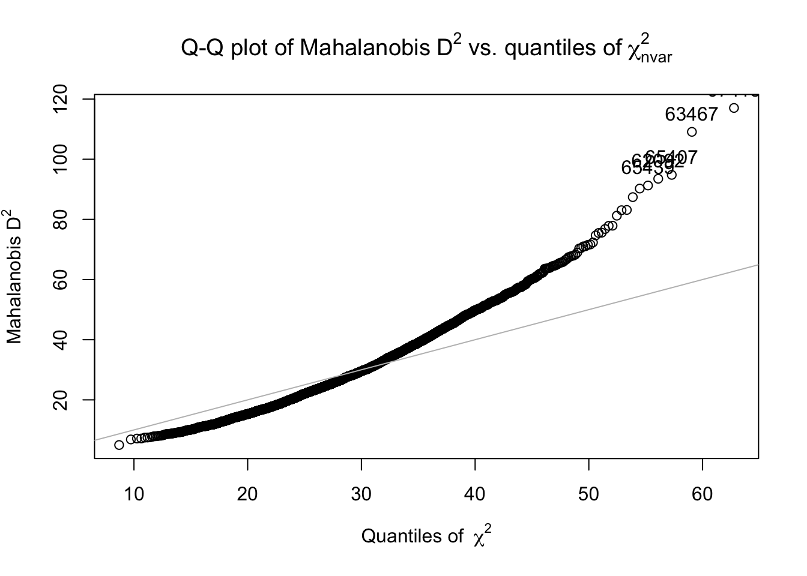

library(psych)The Basics
Introduction
In this chapter, I will focus exclusively on the psych package. I will cover all of the functions that I regularly use.
Prerequisites
If you do not already have the psych package downloaded, you will first need to run install.packages("psych")
Then, you will be able to load the library and use its functions.
We will be using the bfi dataset that is included in the psych package. It is described as follows:
25 personality self report items taken from the International Personality Item Pool (ipip.ori.org) were included as part of the Synthetic Aperture Personality Assessment (SAPA) web based personality assessment project. The data from 2800 subjects are included here as a demonstration set for scale construction, factor analysis, and Item Response Theory analysis. Three additional demographic variables (sex, education, and age) are also included.
The code data(bfi) will take the bfi dataset from the psych package and add it to your R Environment.
data(bfi)Describing Data
The describe() function will return the following for any numeric variable: number of valid cases, mean, standard deviation, trimmed mean (with trim defaulting to .1) , median (standard or interpolated, mad: median absolute deviation (from the median), minimum, maximum, skew, kurtosis, standard error.
Below I am describing the A2 variable which has responses to the Agreeableness statement: Inquire about others' well-being.
describe(bfi$A2) vars n mean sd median trimmed mad min max range skew kurtosis se
X1 1 2773 4.8 1.17 5 4.98 1.48 1 6 5 -1.12 1.05 0.02You can also describe by groups which will return descriptive statistics by groups. Below I am describing the A2 variable by gender. Males = 1, Females =2.
describeBy(A2 ~ gender, data = bfi)
Descriptive statistics by group
gender: 1
vars n mean sd median trimmed mad min max range skew kurtosis se
X1 1 908 4.5 1.26 5 4.65 1.48 1 6 5 -0.89 0.34 0.04
------------------------------------------------------------
gender: 2
vars n mean sd median trimmed mad min max range skew kurtosis se
X1 1 1865 4.95 1.09 5 5.12 1.48 1 6 5 -1.24 1.55 0.03Another useful function is headTail which will show the first and last couple of lines of a dataset.
headTail(bfi) A1 A2 A3 A4 A5 C1 C2 C3 C4 C5 E1 E2 E3 E4 E5 N1 N2 N3
61617 2 4 3 4 4 2 3 3 4 4 3 3 3 4 4 3 4 2
61618 2 4 5 2 5 5 4 4 3 4 1 1 6 4 3 3 3 3
61620 5 4 5 4 4 4 5 4 2 5 2 4 4 4 5 4 5 4
61621 4 4 6 5 5 4 4 3 5 5 5 3 4 4 4 2 5 2
... ... ... ... ... ... ... ... ... ... ... ... ... ... ... ... ... ... ...
67552 2 4 4 3 5 2 3 4 4 3 2 2 4 4 3 <NA> 3 2
67556 2 3 5 2 5 5 5 5 1 1 2 2 6 3 6 3 4 3
67559 5 2 2 4 4 5 5 5 2 6 2 2 4 5 4 5 5 6
67560 2 3 1 4 2 5 5 3 3 3 3 3 1 2 2 1 2 2
N4 N5 O1 O2 O3 O4 O5 gender education age
61617 2 3 3 6 3 4 3 1 <NA> 16
61618 5 5 4 2 4 3 3 2 <NA> 18
61620 2 3 4 2 5 5 2 2 <NA> 17
61621 4 1 3 3 4 3 5 2 <NA> 17
... ... ... ... ... ... ... ... ... ... ...
67552 3 3 6 3 5 4 2 1 4 27
67556 3 1 5 1 6 4 3 2 4 29
67559 4 1 5 2 5 5 1 1 4 31
67560 1 1 3 1 3 5 1 2 4 50Outlier Detection
Find and graph Mahalanobis squared distances to detect outliers using the outlier function. The Mahalanobis distance is D^2 = (x-μ)’ Σ^-1 (x-μ) where Σ is the covariance of the x matrix. D2 may be used as a way of detecting outliers in distribution. Large D2 values, compared to the expected Chi Square values indicate an unusual response pattern. The outlier values are in the vector d2.The mahalanobis function in stats does not handle missing data, therefore I always add in na.rm = TRUE so that NA values are removed.
d2 <- outlier(bfi, plot= TRUE, na.rm = TRUE)
Scoring Scales
My biggest use of the psych package is scale scoring. This example will score the BFI (Big Five Inventory) personality scale.
Make a list of keys
First, we need to create a list that will tell R how to score our scale. In the bfi dataset, the Openness items begin with O, the Conscientiousness items begin with C, the Extraversion items begin with E, the Agreeableness items begin with A, and the Nueroticism items begin with N. We will also need to account for any reverse score items by adding a ‘-’ sign to the variable names that need to be reversed.
ocean.key <- list(Open = c("O1", "-O2", "O3", "O4", "-O5"),
Cons = c("C1", "C2", "C3", "-C4", "-C5"),
Extra = c("-E1", "-E2", "E3", "E4", "E5" ),
Agree = c("-A1", "A2", "A3", "A4", "A5"),
Neuro = c("N1", "N2", "N3", "N4", "N5")
)Scoring the scale
bfi.scores <- scoreItems(keys = ocean.key, items = bfi, min = 1, max = 6)
bfi.scoresCall: scoreItems(keys = ocean.key, items = bfi, min = 1, max = 6)
(Unstandardized) Alpha:
Open Cons Extra Agree Neuro
alpha 0.6 0.72 0.76 0.7 0.81
Standard errors of unstandardized Alpha:
Open Cons Extra Agree Neuro
ASE 0.017 0.014 0.013 0.014 0.011
Average item correlation:
Open Cons Extra Agree Neuro
average.r 0.23 0.34 0.39 0.32 0.46
Median item correlation:
Open Cons Extra Agree Neuro
0.22 0.34 0.38 0.34 0.41
Guttman 6* reliability:
Open Cons Extra Agree Neuro
Lambda.6 0.6 0.72 0.76 0.7 0.81
Signal/Noise based upon av.r :
Open Cons Extra Agree Neuro
Signal/Noise 1.5 2.6 3.2 2.3 4.3
Scale intercorrelations corrected for attenuation
raw correlations below the diagonal, alpha on the diagonal
corrected correlations above the diagonal:
Open Cons Extra Agree Neuro
Open 0.597 0.30 0.32 0.23 -0.12
Cons 0.194 0.72 0.35 0.36 -0.30
Extra 0.215 0.26 0.76 0.63 -0.28
Agree 0.147 0.26 0.46 0.70 -0.24
Neuro -0.086 -0.23 -0.22 -0.18 0.81
In order to see the item by scale loadings and frequency counts of the data
print with the short option = FALSEprint(bfi.scores, short = F)Call: scoreItems(keys = ocean.key, items = bfi, min = 1, max = 6)
(Unstandardized) Alpha:
Open Cons Extra Agree Neuro
alpha 0.6 0.72 0.76 0.7 0.81
Standard errors of unstandardized Alpha:
Open Cons Extra Agree Neuro
ASE 0.017 0.014 0.013 0.014 0.011
Average item correlation:
Open Cons Extra Agree Neuro
average.r 0.23 0.34 0.39 0.32 0.46
Median item correlation:
Open Cons Extra Agree Neuro
0.22 0.34 0.38 0.34 0.41
Guttman 6* reliability:
Open Cons Extra Agree Neuro
Lambda.6 0.6 0.72 0.76 0.7 0.81
Signal/Noise based upon av.r :
Open Cons Extra Agree Neuro
Signal/Noise 1.5 2.6 3.2 2.3 4.3
Scale intercorrelations corrected for attenuation
raw correlations below the diagonal, alpha on the diagonal
corrected correlations above the diagonal:
Open Cons Extra Agree Neuro
Open 0.597 0.30 0.32 0.23 -0.12
Cons 0.194 0.72 0.35 0.36 -0.30
Extra 0.215 0.26 0.76 0.63 -0.28
Agree 0.147 0.26 0.46 0.70 -0.24
Neuro -0.086 -0.23 -0.22 -0.18 0.81
Item by scale correlations:
corrected for item overlap and scale reliability
Open Cons Extra Agree Neuro
O1 0.52 0.20 0.31 0.17 -0.09
O2 -0.45 -0.18 -0.07 -0.01 0.19
O3 0.61 0.20 0.42 0.26 -0.07
O4 0.32 -0.02 -0.10 0.06 0.21
O5 -0.53 -0.14 -0.11 -0.09 0.11
C1 0.28 0.53 0.19 0.13 -0.08
C2 0.20 0.61 0.17 0.22 0.00
C3 0.08 0.54 0.14 0.21 -0.09
C4 -0.23 -0.66 -0.23 -0.24 0.31
C5 -0.10 -0.59 -0.29 -0.26 0.36
E1 -0.16 -0.06 -0.59 -0.30 0.11
E2 -0.15 -0.25 -0.70 -0.39 0.34
E3 0.37 0.20 0.60 0.44 -0.10
E4 0.04 0.23 0.68 0.51 -0.22
E5 0.31 0.40 0.55 0.34 -0.10
A1 -0.14 -0.06 -0.11 -0.39 0.14
A2 0.17 0.23 0.40 0.67 -0.07
A3 0.17 0.22 0.48 0.70 -0.11
A4 0.01 0.29 0.30 0.49 -0.14
A5 0.18 0.23 0.55 0.62 -0.23
N1 -0.12 -0.21 -0.11 -0.22 0.76
N2 -0.06 -0.19 -0.12 -0.22 0.74
N3 -0.03 -0.20 -0.14 -0.14 0.74
N4 -0.02 -0.31 -0.39 -0.22 0.62
N5 -0.18 -0.14 -0.19 -0.04 0.54
Non missing response frequency for each item
1 2 3 4 5 6 miss
O1 0.01 0.04 0.08 0.22 0.33 0.33 0.01
O2 0.29 0.26 0.14 0.16 0.10 0.06 0.00
O3 0.03 0.05 0.11 0.28 0.34 0.20 0.01
O4 0.02 0.04 0.06 0.17 0.32 0.39 0.01
O5 0.27 0.32 0.19 0.13 0.07 0.03 0.01
C1 0.03 0.06 0.10 0.24 0.37 0.21 0.01
C2 0.03 0.09 0.11 0.23 0.35 0.20 0.01
C3 0.03 0.09 0.11 0.27 0.34 0.17 0.01
C4 0.28 0.29 0.17 0.16 0.08 0.02 0.01
C5 0.18 0.20 0.12 0.22 0.17 0.10 0.01
E1 0.24 0.23 0.15 0.16 0.13 0.09 0.01
E2 0.19 0.24 0.12 0.22 0.14 0.09 0.01
E3 0.05 0.11 0.15 0.30 0.27 0.13 0.01
E4 0.05 0.09 0.10 0.16 0.34 0.26 0.00
E5 0.03 0.08 0.10 0.22 0.34 0.22 0.01
A1 0.33 0.29 0.14 0.12 0.08 0.03 0.01
A2 0.02 0.05 0.05 0.20 0.37 0.31 0.01
A3 0.03 0.06 0.07 0.20 0.36 0.27 0.01
A4 0.05 0.08 0.07 0.16 0.24 0.41 0.01
A5 0.02 0.07 0.09 0.22 0.35 0.25 0.01
N1 0.24 0.24 0.15 0.19 0.12 0.07 0.01
N2 0.12 0.19 0.15 0.26 0.18 0.10 0.01
N3 0.18 0.23 0.13 0.21 0.16 0.09 0.00
N4 0.17 0.24 0.15 0.22 0.14 0.09 0.01
N5 0.24 0.24 0.14 0.18 0.12 0.09 0.01headTail(bfi.scores$scores) Open Cons Extra Agree Neuro
61617 3 2.8 3.8 4 2.8
61618 4 4 5 4.2 3.8
61620 4.8 4 4.2 3.8 3.6
61621 3.2 3 3.6 4.6 2.8
... ... ... ... ... ...
67552 4.8 3.2 4.2 4.2 2.8
67556 5 5.4 5 4 2.8
67559 5.2 4.2 4.6 2.8 4.2
67560 4.6 4.2 2.6 3 1.4Adding score to dataset
bfi$OPEN <- bfi.scores$scores[,1]
bfi$CONS <- bfi.scores$scores[,2]
bfi$EXTRA <- bfi.scores$scores[,3]
bfi$AGREE <- bfi.scores$scores[,4]
bfi$NEURO <- bfi.scores$scores[,5]Males = 1, Females =2.
describeBy(OPEN + CONS + EXTRA + AGREE + NEURO ~ gender, data = bfi)
Descriptive statistics by group
gender: 1
vars n mean sd median trimmed mad min max range skew kurtosis se
OPEN 1 919 4.66 0.81 4.8 4.69 0.89 1.2 6 4.8 -0.36 -0.37 0.03
CONS 2 919 4.14 0.96 4.2 4.17 1.19 1.0 6 5.0 -0.24 -0.31 0.03
EXTRA 3 919 3.99 1.11 4.0 4.03 1.19 1.0 6 5.0 -0.36 -0.36 0.04
AGREE 4 919 4.39 0.93 4.4 4.45 0.89 1.2 6 4.8 -0.57 0.04 0.03
NEURO 5 919 2.95 1.14 2.8 2.91 1.19 1.0 6 5.0 0.26 -0.64 0.04
------------------------------------------------------------
gender: 2
vars n mean sd median trimmed mad min max range skew kurtosis se
OPEN 1 1881 4.56 0.80 4.6 4.59 0.89 1.4 6 4.6 -0.34 -0.23 0.02
CONS 2 1881 4.33 0.93 4.4 4.38 0.89 1.0 6 5.0 -0.50 -0.03 0.02
EXTRA 3 1881 4.22 1.02 4.4 4.28 1.19 1.0 6 5.0 -0.52 -0.11 0.02
AGREE 4 1881 4.78 0.85 5.0 4.86 0.89 1.0 6 5.0 -0.89 0.80 0.02
NEURO 5 1881 3.27 1.20 3.2 3.23 1.19 1.0 6 5.0 0.18 -0.68 0.03